An honest, in-the-open devlog of building NAOMS — a sovereign, local-first memory & identity system. Every week, what shipped and what broke.
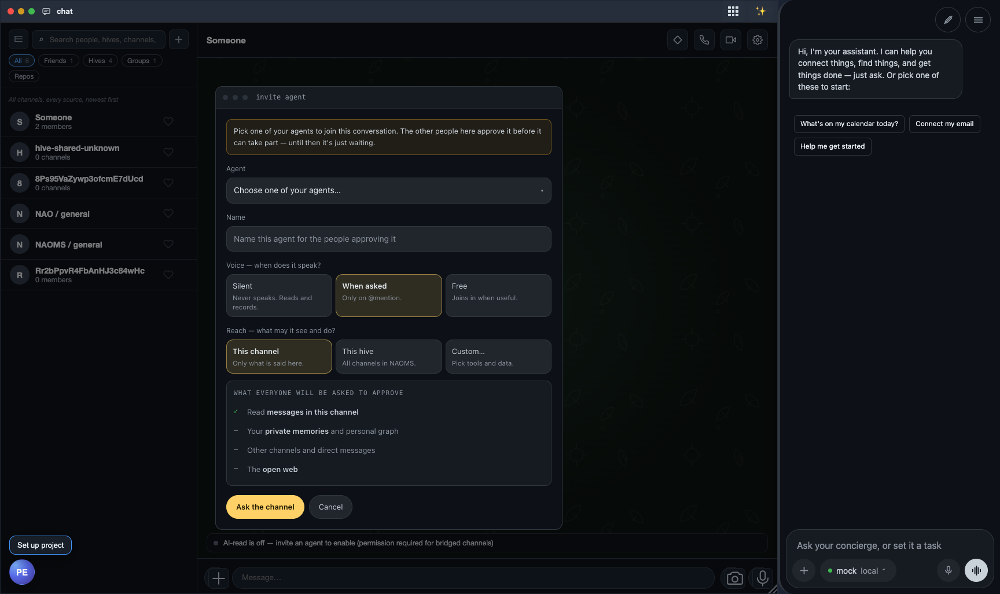
Week 19 · An agent in the room, on your terms
The first week in which you can ask a group conversation how its AI got there.
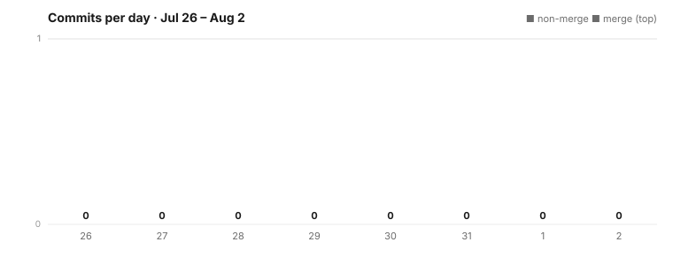
Week 18 · Belonging to a group without being named
If you're in a shared hive, the people in it no longer learn your name just because you're both there. This dispatch is honest about that, and about the other thing that happened: we said no to a speed-up that was real in a lab and useless in reality.

Week 17 · A hundred fixes and a product growing up
Some stretches are about shipping one thing. This one wasn't. Look at the chart above and you'll see a busy stretch of steady output, but the count of changes is the least interesting part. What actually happened is harder to put on a single line: the same…
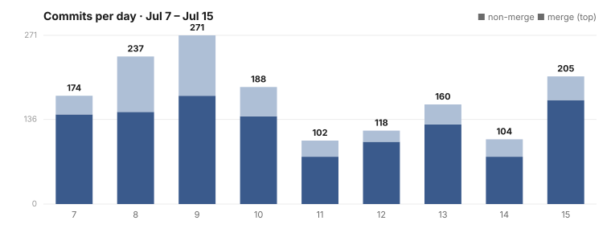
Week 16 · One canvas, and surfaces that admit their limits
Some weeks are about adding a feature. This one was about a posture. Two of them, really, running side by side: give you a single spatial place to hold everything you own, and make every surface honest about the exact edge of what it can do.
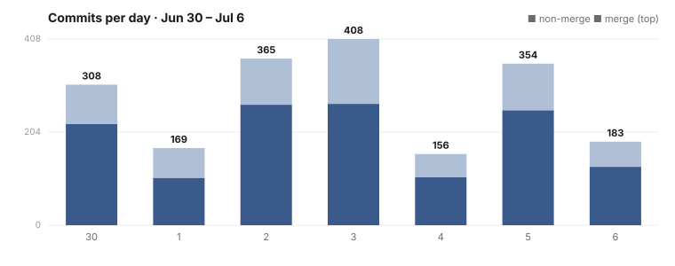
Week 15 · The intelligence moved onto your own device
Last week the story was doorways: NAOMS became a thing you open — a window, a phone, a voice. The obvious next question is the one that actually earns a version number. Behind those doorways, where does the work happen — the understanding, the encryption,…
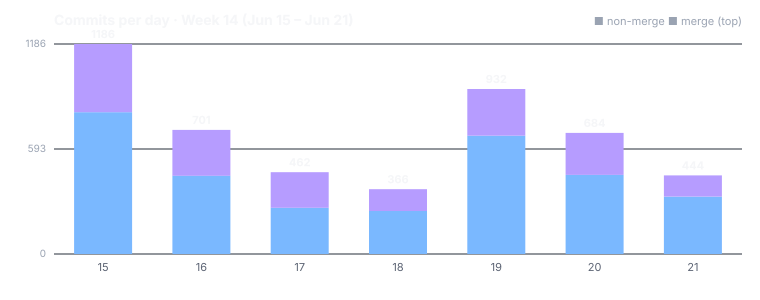
Week 14 · Out of the terminal, into apps you open
For most of its life NAOMS has been a thing you run. You opened a terminal, you started a daemon, you pointed a browser at it, and the system existed in the space between those commands. This week, five separate pieces of work quietly agreed on a different…
Week 13 · Your shared data gets real encryption
A big week — and an honest one. The re-encryption backend that had been a placeholder for months became real and shipped as the default; a long-running mystery — why our local model "never called the tool" — finally broke open; a seedable dataset system…
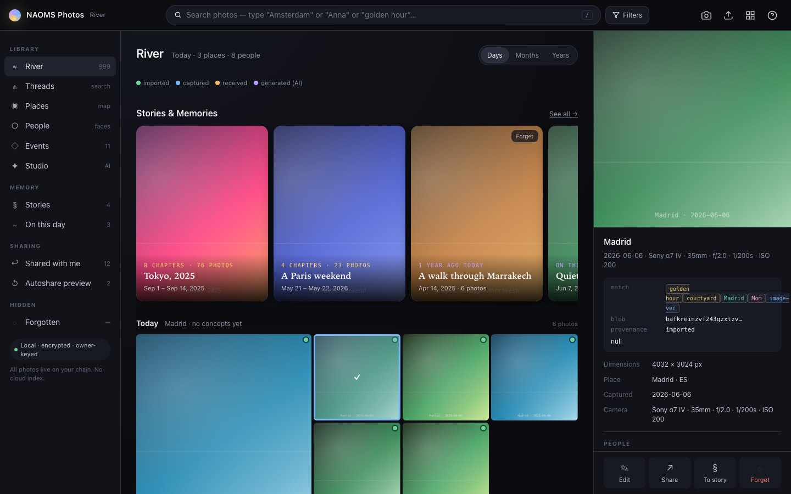
Week 12 · Photos redesigned, and files in real folders
A loud week. Real product shipped: a ground-up photos redesign, a Finder-style files UI, two small CLI affordances, and steady progress on making a daemon hang structurally impossible. Here's the honest accounting.

Week 11 · Sharing only the slice of history you grant
A quieter week on the surface, with one postmortem where the numbers proved our first diagnosis wrong. Here's the honest accounting.

Week 10 · Heavy work that no longer freezes the screen
The week's biggest win for you: the daemon stopped blocking on its own thread, so heavy work — bulk imports, replays — no longer freezes the screen while it runs.
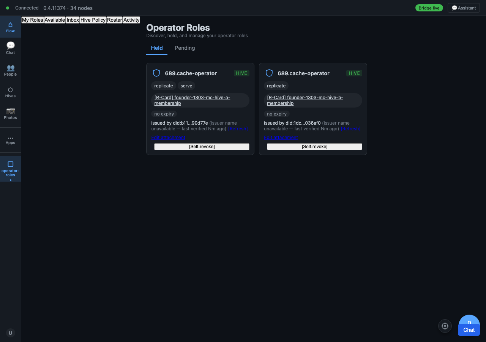
Week 9 · One screen to join and leave every role
The week's biggest human-facing win: one screen where you can find, join, and leave every operator role at once — no more hunting through scattered per-feature screens — verified across 181 screenshots before we called it done.

Week 8 · A week of stability, not features
Some weeks you ship features. This week we shipped stability — small, hard, and real.

Week 7 · Deciding access for each thing you share
This was the week the plumbing showed. Less a parade of features, more a couple of genuine landings. Here is the real status, partial wins labeled as partial.
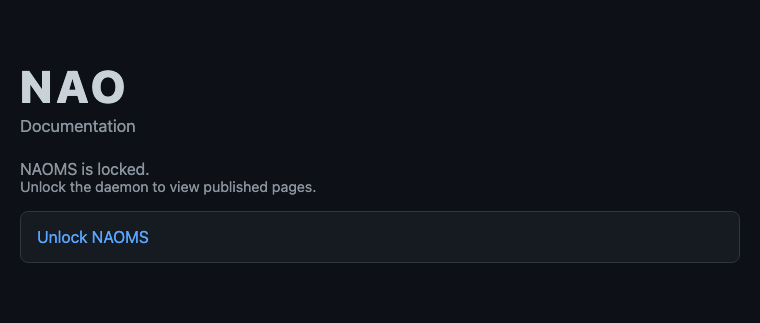
Week 6 · Voice and video, no server in the middle
The calling week. Voice and video over the network became real this week — browser to browser, no server in the middle — while a second front shipped distributed CI/CD on a chain-queue and a brand-new hive-credential effort went from a Friday conversation…
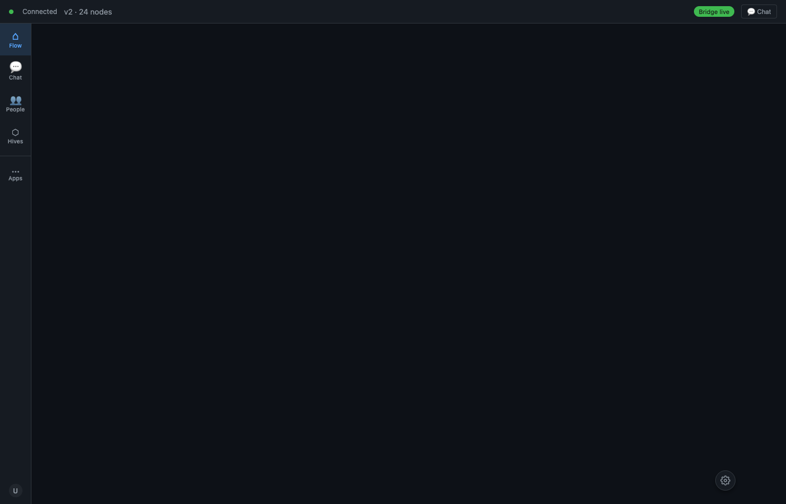
Week 5 · Un-shipping a feature that wasn't done
The unglamorous week. No marquee feature demo this time — the real work was paying down test debt and refusing to let green tests hide gaps. The two stories that define it: a 603-file test relocation that got rolled back to a clean base and re-landed under…

Week 4 · Every change to your data, signed and audited
The week the pixels took a break and the plumbing got serious. If Week 3 was the identity-verification era, Week 4 is the governance-and-chain-discipline era: governance gets pulled out of the command line and folded into the policy engine, every write to…
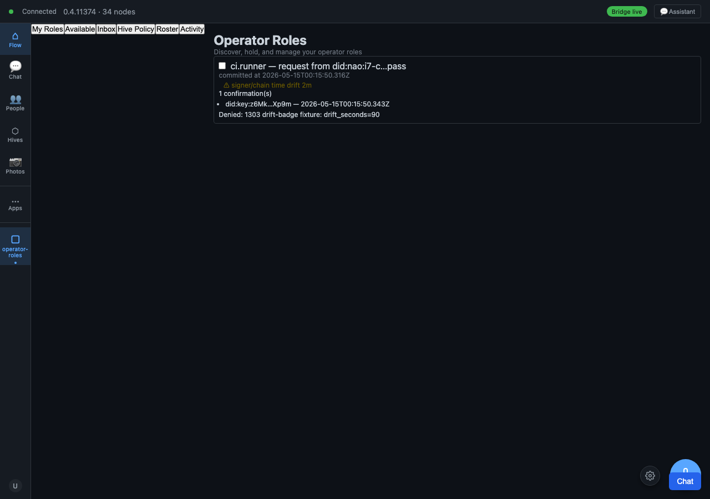
Week 3 · Proving you own your online accounts
The identity-verification era. Where Week 2 built trust and consent as a graph, Week 3 built the machinery to prove things — prove you own an account, prove one attribute without revealing the rest, prove a git pack arrived intact across the open network.…
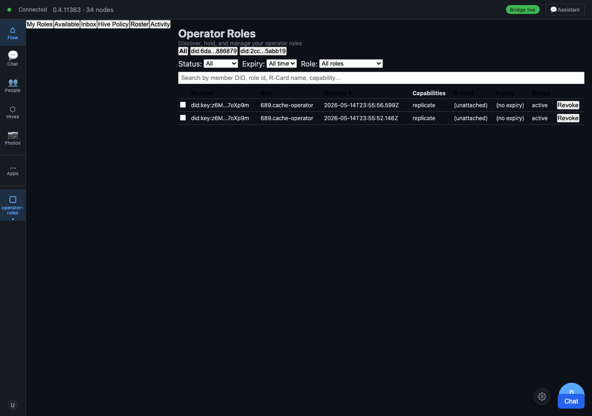
Week 2 · Encrypted memories, and nothing shared without a yes
The trust / consent / encryption era, fully arrived. Week 1 laid the identity foundation; this week the social and relational layer landed all at once — and the database was rebuilt under everyone's feet while it happened. It's the busiest single week of…
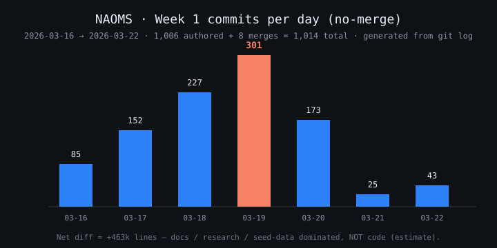
Week 1 · Talking to your memory, on your own machine
The headline of week one: you can now talk to your memory — speak a question and hear a spoken answer back, all running on your own machine, no cloud in the middle.
Browse by theme — Vision is the big picture · Product is what you can do · Technology is how it works · Process is how we build it — or read everything by date →
Vision
Why this matters and where it's going — for investors, new members, and the curious.
52 postsProduct
What you can do with it, and what comes next — for people who'd build with NAOMS.
93 postsTechnology
How it actually works, in depth — for developers and due diligence.
48 postsProcess
How we build it, honestly — for collaborators who might join.